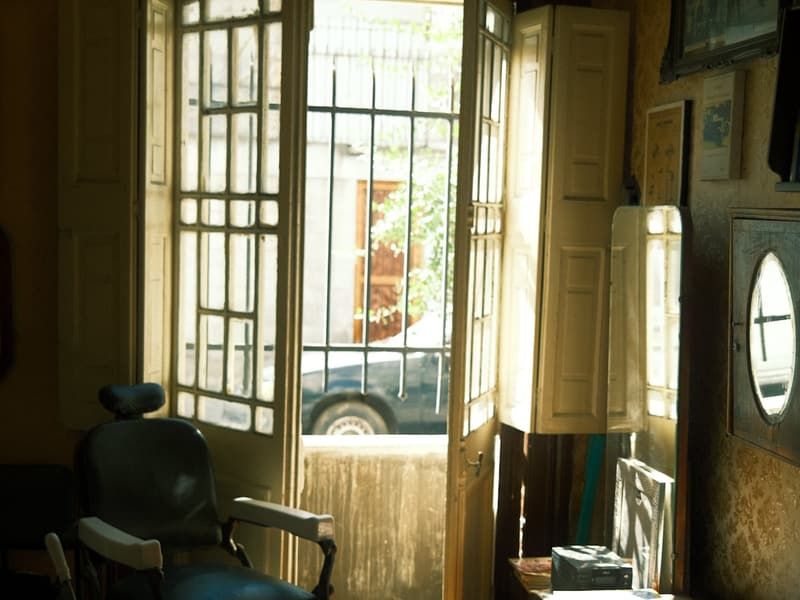

Salon fryzjerski męski
Męski fryzjer w samym sercu Kielc
Strzyżenie, broda i klasyczne golenie brzytwą — na deptaku przy Sienkiewicza 76, w przejściu „pod filarami”. Bez pośpiechu, z dbałością o detal.
Barber shop dla mężczyzn, którzy wiedzą, czego chcą
Gola's Barber Shop działa przy ulicy Henryka Sienkiewicza 76 — na głównym deptaku Kielc, w przejściu „pod filarami”. To miejsce, do którego wpada się po drodze przez miasto i wychodzi z porządnie zrobioną fryzurą.
Pracujemy spokojnie i dokładnie. Każda wizyta zaczyna się od krótkiej rozmowy o tym, jak chcesz wyglądać i ile czasu realnie masz na codzienną stylizację — dopiero potem sięgamy po nożyczki.
Ocena 4,9 na podstawie 192 opinii w Google to dla nas najlepszy dowód, że takie podejście się sprawdza.
- 4,9ocena w Google — 192 opinie
- Sienkiewicza 76ścisłe centrum, deptak
- Rezerwacjatelefonicznie lub online
Usługi
Pełen zakres barberski dla mężczyzn — od szybkiej korekty po kompleksową metamorfozę fryzury i brody.
- 1 Strzyżenie włosów Klasyczne i nowoczesne cięcia, dobrane do kształtu głowy i typu włosów. Wykończenie maszynką i nożyczkami. 80–120 zł
- 2 Golenie brzytwą Tradycyjne golenie na gorącym ręczniku — z pianą, olejkiem i kojącym balsamem po zabiegu. 100 zł
- 3 Modelowanie brody Regulacja konturu, przycięcie na długość, stylizacja wąsów i wykończenie brzytwą. 80–110 zł
- 4 Strzyżenie + broda Komplet w jednej wizycie. Najczęściej wybierana usługa — włosy i broda dopasowane do siebie. 130–180 zł
- 5 Depilacja uszu i nosa Szybkie i bezpieczne usunięcie zbędnego owłosienia z uszu, nosa i karku. Zwykle dodawane do strzyżenia. cennik w salonie
- 6 Doradztwo i pielęgnacja Pomoc w doborze fryzury oraz kosmetyków do włosów i brody do stosowania w domu. w cenie wizyty
- 7 Koloryzacja Krycie siwizny i wyrównanie koloru włosów lub brody. 80 zł
Ceny pochodzą z profilu Booksy tego salonu. Widełki biorą się stąd, że przy części usług Booksy ma kilka stawek — zależnie od barbera. Dokładną cenę potwierdzi się przy rezerwacji.



Zdjęcia ilustracyjne na wolnej licencji (Unsplash). Pełna lista autorów i źródeł: CREDITS.md.
Salon fryzjerski męski
Gola's
Dziś
Kiedy nas zastaniesz
- Poniedziałek08:00–13:00, 14:00–18:00
- Wtorek08:00–13:00, 14:00–18:00
- Środa08:00–13:00, 14:00–18:00
- Czwartek08:00–13:00, 14:00–18:00
- Piątek08:00–13:00, 14:00–18:00
- Sobota08:00–18:00
- NiedzielaZamknięte
Henryka Sienkiewicza 76 (przejście „pod filarami”)
25-501 Kielce
Godziny z profilu Booksy salonu (stan na 30.08.2026). W dni powszednie jest przerwa 13:00–14:00. Przed dojazdem warto potwierdzić telefonicznie.